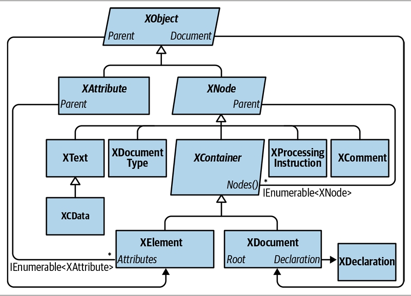
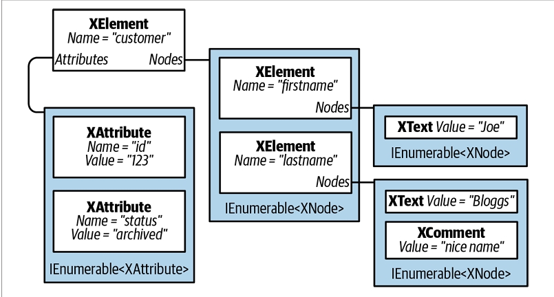
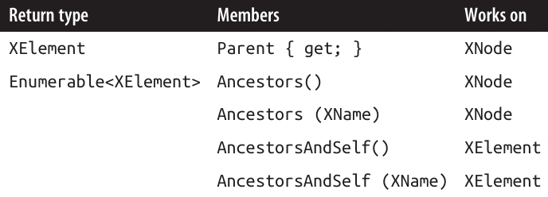

فصل دهم: LINQ to XML
.NET تعداد زیادی API برای کار با دادههای XML فراهم میکند. انتخاب اصلی برای پردازش عمومی اسناد XML، LINQ to XML است.
LINQ to XML شامل یک مدل شیء سند XML (DOM) سبک و سازگار با LINQ است، بهعلاوه مجموعهای از عملگرهای پرسوجوی تکمیلی.
در این فصل، ما بهطور کامل روی LINQ to XML تمرکز میکنیم. در فصل ۱۱، به خواننده/نویسنده XML یکطرفه (forward-only) میپردازیم و در ضمیمهی آنلاین، نوعهایی برای کار با schemaها و stylesheetها را پوشش میدهیم. .NET همچنین شامل DOM قدیمی مبتنی بر XmlDocument است که ما آن را پوشش نمیدهیم.
DOM مربوط به LINQ to XML بسیار خوب طراحی شده و از نظر کارایی بسیار قوی است. حتی بدون LINQ، این DOM بهعنوان یک لایهی سبک روی کلاسهای سطح پایین XmlReader و XmlWriter ارزشمند است.
تمام نوعهای LINQ to XML در فضای نام System.Xml.Linq تعریف شدهاند.
🏛 نمای کلی معماری (Architectural Overview)
این بخش با معرفی بسیار کوتاهی از مفهوم DOM شروع میشود و سپس منطق پشت DOM در LINQ to XML را توضیح میدهد.
❓ DOM چیست؟ (What Is a DOM?)
به فایل XML زیر توجه کنید:
<?xml version="1.0" encoding="utf-8"?>
<customer id="123" status="archived">
<firstname>Joe</firstname>
<lastname>Bloggs</lastname>
</customer>
همانطور که در همهی فایلهای XML وجود دارد، ما با یک اعلان (declaration) شروع میکنیم و سپس یک عنصر ریشه (root element) داریم که نام آن customer است.
عنصر customer دو ویژگی (attribute) دارد، هرکدام با یک نام (id و status) و مقدار ("123" و "archived").
درون customer، دو عنصر فرزند (child element) وجود دارد: firstname و lastname، که هرکدام محتوای متنی سادهای ("Joe" و "Bloggs") دارند.
هرکدام از این ساختارها—اعلان، عنصر، ویژگی، مقدار، و محتوای متنی—میتوانند با یک کلاس (class) نمایش داده شوند. و اگر چنین کلاسهایی خصوصیتهای مجموعهای (collection properties) برای ذخیرهی محتوای فرزند داشته باشند، میتوانیم یک درخت از اشیاء بسازیم که یک سند را بهطور کامل توصیف کند.
به این مدل، Document Object Model یا DOM گفته میشود.
🧩 DOM در LINQ to XML
LINQ to XML از دو بخش تشکیل شده است:
- یک DOM مربوط به XML که آن را X-DOM مینامیم.
- مجموعهای از حدود ۱۰ عملگر پرسوجوی تکمیلی.
همانطور که انتظار میرود، X-DOM شامل نوعهایی مثل XDocument، XElement و XAttribute است.
نکتهی جالب این است که نوعهای X-DOM به LINQ وابسته نیستند—شما میتوانید یک X-DOM را بارگذاری (load)، نمونهسازی (instantiate)، بهروزرسانی (update) و ذخیره (save) کنید بدون آنکه هیچ پرسوجوی LINQ بنویسید.
برعکس، شما میتوانید از LINQ برای پرسوجو در یک DOM که با نوعهای قدیمی و سازگار با W3C ساخته شده، استفاده کنید. با این حال، این کار محدودکننده و آزاردهنده خواهد بود.
ویژگی متمایز X-DOM این است که سازگار با LINQ (LINQ-friendly) است، یعنی:
- متدهایی دارد که توالیهای IEnumerable مفیدی تولید میکنند که میتوانید روی آنها پرسوجو کنید.
- سازندههای آن بهگونهای طراحی شدهاند که میتوانید یک درخت X-DOM را از طریق یک LINQ projection بسازید.
📊 نمای کلی X-DOM
شکل ۱۰-۱ نوعهای اصلی X-DOM را نشان میدهد.
پرکاربردترین این نوعها XElement است.
XObject ریشهی سلسلهمراتب وراثت است؛ و XElement و XDocument ریشههای سلسلهمراتب دربرگیری (containership hierarchy) هستند.

شکل ۱۰-۲ درخت X-DOM ساختهشده از کد زیر را نشان میدهد:
string xml = @"<customer id='123' status='archived'>
<firstname>Joe</firstname>
<lastname>Bloggs<!--nice name--></lastname>
</customer>";
XElement customer = XElement.Parse (xml);

🧩 XObject
XObject کلاس پایهی انتزاعی برای تمام محتوای XML است. این کلاس یک پیوند به عنصر Parent (والد) در درخت دربرگیری (containership tree) تعریف میکند و همچنین میتواند یک XDocument اختیاری داشته باشد.
🧩 XNode
XNode کلاس پایه برای بیشتر محتوای XML (بهجز attributeها) است. ویژگی متمایز XNode این است که میتواند در یک مجموعهی مرتبشده از XNodeهای چندنوعی قرار بگیرد.
برای مثال، به XML زیر توجه کنید:
<data>
Hello world
<subelement1/>
<!--comment-->
<subelement2/>
</data>
درون عنصر والد <data>، ابتدا یک XText node ("Hello world") قرار دارد، سپس یک XElement node، بعد یک XComment node، و در پایان یک XElement node دیگر.
در مقابل، یک XAttribute تنها سایر XAttributeها را بهعنوان همسطح (peer) میپذیرد.
با اینکه یک XNode میتواند به عنصر والد خود (XElement) دسترسی داشته باشد، اما هیچ مفهومی از child node ندارد؛ این وظیفهی زیرکلاس آن یعنی XContainer است.
🧩 XContainer
XContainer اعضایی برای کار با فرزندان تعریف میکند و کلاس پایهی انتزاعی برای XElement و XDocument است.
🧩 XElement
XElement اعضایی برای مدیریت attributeها معرفی میکند—و همچنین خصوصیتهای Name و Value را.
در حالتی که یک عنصر تنها یک فرزند از نوع XText داشته باشد (که حالت نسبتاً رایجی است)، خصوصیت Value در XElement محتوای این فرزند را هم برای عملیات get و هم برای set دربرمیگیرد و نیاز به پیمایش غیرضروری را حذف میکند.
به لطف Value، معمولاً نیازی به کار مستقیم با XText nodeها ندارید.
🧩 XDocument
XDocument ریشهی یک درخت XML را نمایش میدهد. بهطور دقیقتر، این کلاس عنصر ریشه (root XElement) را دربر میگیرد و یک XDeclaration، دستورالعملهای پردازش (processing instructions) و سایر موارد سطح ریشه را اضافه میکند.
برخلاف DOM در استاندارد W3C، استفاده از XDocument اختیاری است: شما میتوانید یک X-DOM را بارگذاری، دستکاری و ذخیره کنید بدون اینکه هیچوقت یک XDocument بسازید!
همچنین مستقل بودن از XDocument باعث میشود بتوانید یک زیردرخت node را بهطور کارآمد و آسان به سلسلهمراتب X-DOM دیگری منتقل کنید.
📥 بارگذاری و تجزیه (Loading and Parsing)
هم XElement و هم XDocument متدهای ایستای (static) Load و Parse را برای ساختن یک درخت X-DOM از یک منبع موجود ارائه میدهند:
- Load یک X-DOM را از فایل، URI، Stream، TextReader یا XmlReader میسازد.
- Parse یک X-DOM را از یک رشته (string) میسازد.
مثال:
XDocument fromWeb = XDocument.Load ("http://albahari.com/sample.xml");
XElement fromFile = XElement.Load (@"e:\media\somefile.xml");
XElement config = XElement.Parse (
@"<configuration>
<client enabled='true'>
<timeout>30</timeout>
</client>
</configuration>");
در بخشهای بعدی، روش پیمایش و بهروزرسانی یک X-DOM را توضیح میدهیم.
بهعنوان یک پیشنمایش سریع، در اینجا نحوهی دستکاری عنصر config که همین الان ساختیم آمده است:
foreach (XElement child in config.Elements())
Console.WriteLine (child.Name); // client
XElement client = config.Element ("client");
bool enabled = (bool) client.Attribute ("enabled"); // Read attribute
Console.WriteLine (enabled); // True
client.Attribute ("enabled").SetValue (!enabled); // Update attribute
int timeout = (int) client.Element ("timeout"); // Read element
Console.WriteLine (timeout); // 30
client.Element ("timeout").SetValue (timeout * 2); // Update element
client.Add (new XElement ("retries", 3)); // Add new element
Console.WriteLine (config); // Implicitly call config.ToString()
نتیجهی آخرین دستور Console.WriteLine بهشکل زیر خواهد بود:
<configuration>
<client enabled="false">
<timeout>60</timeout>
<retries>3</retries>
</client>
</configuration>
🧩 XNode.ReadFrom
XNode همچنین یک متد ایستای ReadFrom دارد که هر نوع node را از یک XmlReader نمونهسازی و مقداردهی میکند.
برخلاف Load، این متد پس از خواندن یک node کامل متوقف میشود، بنابراین شما میتوانید بهطور دستی از همان XmlReader ادامهی خواندن را انجام دهید.
همچنین میتوانید برعکس عمل کنید و با استفاده از متدهای CreateReader و CreateWriter، از یک XmlReader یا XmlWriter برای خواندن یا نوشتن یک XNode استفاده کنید.
ما در فصل ۱۱ خوانندهها و نویسندههای XML و نحوهی استفاده از آنها با X-DOM را توضیح خواهیم داد.
💾 ذخیرهسازی و سریالسازی (Saving and Serializing)
فراخوانی ToString روی هر node، محتوای آن را به یک رشتهی XML تبدیل میکند—با قالببندی شامل شکست خط و تورفتگی، همانطور که دیدیم.
(میتوانید شکست خط و تورفتگی را غیرفعال کنید، با مشخص کردن SaveOptions.DisableFormatting هنگام فراخوانی ToString.)
XElement و XDocument همچنین متد Save دارند که یک X-DOM را در فایل، Stream، TextWriter یا XmlWriter مینویسد. اگر یک فایل مشخص کنید، بهطور خودکار یک XML declaration نوشته میشود.
همچنین متد WriteTo در کلاس XNode تعریف شده است که فقط یک XmlWriter میپذیرد.
ما جزئیات بیشتری دربارهی نحوهی مدیریت اعلانهای XML هنگام ذخیرهسازی را در بخش “Documents and Declarations” در صفحهی ۵۳۹ توضیح خواهیم داد.
نمونهسازی یک X-DOM
بهجای استفاده از متدهای Load یا Parse، میتوانید یک درخت X-DOM را با نمونهسازی دستی اشیاء و افزودن آنها به یک والد از طریق متد Add در کلاس XContainer بسازید.
برای ساختن یک XElement و XAttribute کافی است یک نام و مقدار مشخص کنید:
XElement lastName = new XElement("lastname", "Bloggs");
lastName.Add(new XComment("nice name"));
XElement customer = new XElement("customer");
customer.Add(new XAttribute("id", 123));
customer.Add(new XElement("firstname", "Joe"));
customer.Add(lastName);
Console.WriteLine(customer.ToString());
خروجی به این صورت است:
<customer id="123">
<firstname>Joe</firstname>
<lastname>Bloggs<!--nice name--></lastname>
</customer>
وقتی یک XElement میسازید، مقدار (value) اختیاری است — میتوانید فقط نام عنصر را بدهید و بعداً محتوا اضافه کنید. توجه کنید که وقتی مقداری تعیین کردیم، یک رشتهی ساده کافی بود؛ لازم نبود که بهطور صریح یک XText بسازیم و اضافه کنیم. X-DOM این کار را بهطور خودکار انجام میدهد، بنابراین شما فقط با "مقدار" سروکار دارید.
ساختار تابعی (Functional Construction)
در مثال قبل، خواندن ساختار XML از روی کد کمی دشوار است. X-DOM یک حالت دیگر نمونهسازی به نام ساختار تابعی (از برنامهنویسی تابعی) پشتیبانی میکند. در این حالت، میتوانید کل درخت را در یک عبارت واحد بسازید:
XElement customer =
new XElement("customer", new XAttribute("id", 123),
new XElement("firstname", "joe"),
new XElement("lastname", "bloggs",
new XComment("nice name")
)
);
این روش دو مزیت دارد:
- کد شبیه ساختار XML میشود.
- میتوان آن را در عبارت select یک کوئری LINQ استفاده کرد.
مثلاً، کوئری زیر از یک کلاس موجودیت EF Core به یک X-DOM پروجکت میکند:
XElement query =
new XElement("customers",
from c in dbContext.Customers.AsEnumerable()
select
new XElement("customer", new XAttribute("id", c.ID),
new XElement("firstname", c.FirstName),
new XElement("lastname", c.LastName,
new XComment("nice name")
)
)
);
(این موضوع را بعداً در همین فصل در بخش «پروجکت کردن به داخل یک X-DOM» بررسی میکنیم.)
تعیین محتوا (Specifying Content)
ساختار تابعی امکانپذیر است چون سازندههای XElement (و XDocument) طوری overload شدهاند که یک params object[] را بپذیرند:
public XElement (XName name, params object[] content)
همین موضوع برای متد Add در XContainer نیز صدق میکند:
public void Add (params object[] content)
بنابراین، هنگام ساخت یا اضافه کردن به یک X-DOM میتوانید هر تعداد شیء با هر نوعی را بهعنوان فرزند مشخص کنید. دلیل این کار این است که هر چیزی میتواند محتوای قانونی باشد. در اینجا تصمیماتی که XContainer برای پردازش هر شیء میگیرد آمده است:
- اگر شیء null باشد، نادیده گرفته میشود.
- اگر شیء از نوع XNode یا XStreamingElement باشد، مستقیماً به کالکشن Nodes اضافه میشود.
- اگر شیء یک XAttribute باشد، به کالکشن Attributes اضافه میشود.
- اگر شیء یک string باشد، در یک XText قرار گرفته و به Nodes افزوده میشود.
- اگر شیء از IEnumerable پیروی کند، اعضای آن پیمایش شده و همین قوانین روی هر عضو اعمال میشود.
- در غیر این صورت، شیء به رشته تبدیل شده، در یک XText قرار گرفته و به Nodes اضافه میشود.
نکته: X-DOM این مرحله را بهینهسازی میکند و محتوای متنی ساده را در یک string ذخیره میکند. نود XText واقعاً ساخته نمیشود تا وقتی که متد Nodes() را روی XContainer فراخوانی کنید.
در نهایت، همه چیز یا در Nodes قرار میگیرد یا در Attributes.
پیش از صدا زدن ToString روی یک نوع دلخواه، XContainer بررسی میکند که آیا از انواع زیر هست یا خیر:
float, double, decimal, bool, DateTime, DateTimeOffset, TimeSpan
اگر چنین باشد، بهجای ToString معمولی، متد مناسب XmlConvert فراخوانی میشود تا دادهها قابلیت round-trip داشته باشند و با قوانین استاندارد XML سازگار باشند.
کلونگیری عمیق خودکار (Automatic Deep Cloning)
وقتی یک نود یا attribute به یک element اضافه میشود (چه از طریق ساختار تابعی یا متد Add)، خاصیت Parent آن نود یا attribute به آن عنصر تنظیم میشود.
از آنجا که هر نود فقط میتواند یک والد داشته باشد، اگر یک نودِ والددار را به والد دیگری اضافه کنید، آن نود بهطور خودکار کلون عمیق (deep clone) میشود.
مثال:
var address = new XElement("address",
new XElement("street", "Lawley St"),
new XElement("town", "North Beach")
);
var customer1 = new XElement("customer1", address);
var customer2 = new XElement("customer2", address);
customer1.Element("address").Element("street").Value = "Another St";
Console.WriteLine(
customer2.Element("address").Element("street").Value); // Lawley St
این تکثیر خودکار باعث میشود نمونهسازی X-DOM بدون side effect باشد — که یکی دیگر از ویژگیهای کلیدی برنامهنویسی تابعی است. ✅
پیمایش و کوئریگیری (Navigating and Querying)
همانطور که انتظار دارید، کلاسهای XNode و XContainer متدها و ویژگیهایی برای پیمایش درخت X-DOM تعریف میکنند. اما برخلاف یک DOM سنتی، این توابع مجموعهای که IList
این موضوع امکان اجرای کوئریهای پیشرفته را در کنار وظایف سادهی پیمایش، با استفاده از همان سینتکس آشنای LINQ، فراهم میکند. ✅
نکته: همانند XML، در X-DOM نام عناصر (Element) و صفات (Attribute) حساس به حروف کوچک و بزرگ هستند.
پیمایش نودهای فرزند (Child Node Navigation)

تابعهایی که در ستون سوم جدول (اینجا و در جدولهای دیگر) با یک ستاره (*) علامتگذاری شدهاند، روی دنبالههایی از همان نوع هم عمل میکنند.
برای مثال، میتوانید متد Nodes را هم روی یک شیء XContainer و هم روی یک دنباله از اشیاء XContainer فراخوانی کنید. این قابلیت به لطف extension methodهایی است که در فضای نام System.Xml.Linq تعریف شدهاند—یعنی همان عملگرهای کمکی کوئری که در بخش مروری (overview) دربارهشان صحبت کردیم.
🟢 FirstNode، LastNode و Nodes
- FirstNode و LastNode دسترسی مستقیم به اولین یا آخرین نود فرزند میدهند.
- Nodes همهی فرزندها را به صورت یک دنباله (sequence) برمیگرداند.
هر سه این تابعها فقط فرزندان مستقیم (direct descendants) را در نظر میگیرند:
var bench = new XElement ("bench",
new XElement ("toolbox",
new XElement ("handtool", "Hammer"),
new XElement ("handtool", "Rasp")
),
new XElement ("toolbox",
new XElement ("handtool", "Saw"),
new XElement ("powertool", "Nailgun")
),
new XComment ("Be careful with the nailgun")
);
foreach (XNode node in bench.Nodes())
Console.WriteLine (node.ToString (SaveOptions.DisableFormatting) + ".");
🔹 خروجی کد بالا:
<toolbox><handtool>Hammer</handtool><handtool>Rasp</handtool></toolbox>.
<toolbox><handtool>Saw</handtool><powertool>Nailgun</powertool></toolbox>.
<!--Be careful with the nailgun-->.
🟢 بازیابی عناصر (Retrieving elements)
متد Elements فقط نودهای فرزند از نوع XElement را برمیگرداند:
foreach (XElement e in bench.Elements())
Console.WriteLine (e.Name + "=" + e.Value);
// toolbox=HammerRasp
// toolbox=SawNailgun
🔹 کوئری زیر جعبهابزاری (toolbox) را پیدا میکند که درونش ابزار Nailgun وجود دارد:
IEnumerable<string> query =
from toolbox in bench.Elements()
where toolbox.Elements().Any (tool => tool.Value == "Nailgun")
select toolbox.Value;
// RESULT: { "SawNailgun" }
🔹 در مثال بعدی از SelectMany استفاده میکنیم تا ابزارهای دستی (handtool) همهی جعبهابزارها را بهدست بیاوریم:
IEnumerable<string> query =
from toolbox in bench.Elements()
from tool in toolbox.Elements()
where tool.Name == "handtool"
select tool.Value;
// RESULT: { "Hammer", "Rasp", "Saw" }
🟢 نکته درباره Elements
- متد Elements معادل یک کوئری LINQ روی Nodes است.
مثلاً کوئری قبل میتوانست اینطور شروع شود:
from toolbox in bench.Nodes().OfType<XElement>()
where ...
- متد Elements میتواند فقط عناصر با یک نام مشخص را هم برگرداند:
int x = bench.Elements("toolbox").Count(); // 2
این کد معادل است با:
int x = bench.Elements().Where (e => e.Name == "toolbox").Count(); // 2
- متد Elements بهعنوان یک extension method هم تعریف شده که یک IEnumerable
(یا دقیقتر: IEnumerable<T> where T : XContainer) میپذیرد.
به همین دلیل، میتواند روی دنبالهای از عناصر هم کار کند.
مثال بازنویسیشده برای یافتن ابزارهای دستی:
from tool in bench.Elements("toolbox").Elements("handtool")
select tool.Value;
🔹 در اینجا:
- فراخوانی اول Elements به متد نمونهای (instance method) در XContainer متصل میشود.
- فراخوانی دوم Elements به متد توسعهای (extension method) متصل میشود.
بازیابی یک عنصر منفرد (Retrieving a Single Element)
متد Element (تکجمع) اولین عنصر مطابق با نام دادهشده را برمیگرداند.
این متد برای پیمایش ساده مفید است، مانند مثال زیر:
XElement settings = XElement.Load("databaseSettings.xml");
string cx = settings.Element("database").Element("connectString").Value;
متد Element معادل فراخوانی Elements() و سپس اعمال FirstOrDefault با یک predicate برای مطابقت نام است.
اگر عنصر درخواستشده وجود نداشته باشد، Element مقدار null برمیگرداند.
توجه: فراخوانی
Element("xyz").Valueزمانی که عنصرxyzوجود نداشته باشد، باعث NullReferenceException میشود.
برای جلوگیری از استثنا میتوانید از null-conditional operator استفاده کنید:
Element("xyz")?.Value
یا عنصر XElement را مستقیماً به string تبدیل کنید:
string xyz = (string)settings.Element("xyz");
این کار امکانپذیر است چون XElement یک تبدیل صریح به رشته (explicit string conversion) تعریف کرده است. ✅
بازیابی فرزندان و نوهها (Retrieving Descendants)
کلاس XContainer همچنین متدهای Descendants و DescendantNodes را ارائه میدهد که عناصر یا نودهای فرزند و تمامی فرزندان آنها (کل درخت) را برمیگردانند.
متد Descendants یک نام عنصر اختیاری هم میپذیرد.
مثال:
Console.WriteLine(bench.Descendants("handtool").Count()); // 3
هم والدها و هم برگها شامل میشوند، همانطور که مثال زیر نشان میدهد:
foreach (XNode node in bench.DescendantNodes())
Console.WriteLine(node.ToString(SaveOptions.DisableFormatting));
🔹 خروجی:
<toolbox><handtool>Hammer</handtool><handtool>Rasp</handtool></toolbox>
<handtool>Hammer</handtool>
Hammer
<handtool>Rasp</handtool>
Rasp
<toolbox><handtool>Saw</handtool><powertool>Nailgun</powertool></toolbox>
<handtool>Saw</handtool>
Saw
<powertool>Nailgun</powertool>
Nailgun
<!--Be careful with the nailgun-->
کوئری بعدی تمام commentهای داخل X-DOM که شامل کلمهی "careful" هستند را استخراج میکند:
IEnumerable<string> query =
from c in bench.DescendantNodes().OfType<XComment>()
where c.Value.Contains("careful")
orderby c.Value
select c.Value;
پیمایش والدین (Parent Navigation)
تمام XNodeها دارای خصوصیت Parent و متدهای AncestorXXX برای پیمایش والدین هستند.
یک والد همیشه از نوع XElement است.

اگر x یک XElement باشد، کد زیر همیشه مقدار true چاپ میکند:
foreach (XNode child in x.Nodes())
Console.WriteLine(child.Parent == x);
با این حال، این موضوع در مورد XDocument صادق نیست. XDocument کمی متفاوت است: میتواند فرزند داشته باشد اما هرگز نمیتواند والد هیچ نودی باشد!
برای دسترسی به XDocument، باید از خصوصیت Document استفاده کنید؛ این ویژگی روی هر شیء در درخت X-DOM کار میکند.
پیمایش والدین (Ancestors)
- متد Ancestors یک دنباله برمیگرداند که اولین عنصر آن Parent است، عنصر بعدی Parent.Parent و به همین ترتیب تا رسیدن به عنصر ریشه ادامه دارد.
- میتوانید با کوئری LINQ زیر به عنصر ریشه دسترسی پیدا کنید:
AncestorsAndSelf().Last();
- روش دیگر برای رسیدن به عنصر ریشه این است که از Document.Root استفاده کنید، البته این فقط زمانی کار میکند که یک XDocument موجود باشد.
پیمایش نودهای همسطح (Peer Node Navigation)

با PreviousNode و NextNode (و همچنین FirstNode و LastNode) میتوانید نودها را مانند یک لیست پیوندی (linked list) پیمایش کنید.
این اتفاق تصادفی نیست: در سطح داخلی، نودها در یک لیست پیوندی ذخیره میشوند.
توجه: XNode از یک لیست پیوندی تکجهته استفاده میکند، بنابراین PreviousNode عملکرد چندان بهینهای ندارد.
پیمایش صفات (Attribute Navigation)

علاوه بر این، XAttribute خصوصیات PreviousAttribute و NextAttribute را تعریف میکند و همچنین Parent را دارد.
متد Attributes که یک نام را میپذیرد، یک دنباله با صفر یا یک عنصر برمیگرداند؛ زیرا یک عنصر نمیتواند در XML صفات با نامهای تکراری داشته باشد. ✅
بهروزرسانی X-DOM (Updating an X-DOM)
میتوانید عناصر و صفات را به روشهای زیر بهروزرسانی کنید:
- فراخوانی SetValue یا اختصاص دوباره به خصوصیت Value.
- فراخوانی SetElementValue یا SetAttributeValue.
- فراخوانی یکی از متدهای RemoveXXX.
- فراخوانی یکی از متدهای AddXXX یا ReplaceXXX و مشخص کردن محتوای جدید.
همچنین میتوانید خصوصیت Name را روی اشیاء XElement دوباره اختصاص دهید.
بهروزرسانی ساده مقادیر (Simple Value Updates)

متد SetValue محتوای یک عنصر یا صفت را با یک مقدار ساده جایگزین میکند.
اختصاص مقدار به خصوصیت Value نیز همین کار را انجام میدهد، اما فقط دادههای رشتهای (string) را میپذیرد.
هر دوی این توابع بهطور دقیقتر در بخش «Working with Values» در صفحه 537 توضیح داده شدهاند. ✅
یکی از اثرات فراخوانی SetValue (یا اختصاص دوباره به Value) این است که تمام نودهای فرزند را جایگزین میکند:
XElement settings = new XElement("settings",
new XElement("timeout", 30)
);
settings.SetValue("blah");
Console.WriteLine(settings.ToString()); // <settings>blah</settings>
بهروزرسانی نودهای فرزند و صفات (Updating Child Nodes and Attributes)

راحتترین متدها در این گروه، دو متد آخر یعنی SetElementValue و SetAttributeValue هستند.
این متدها بهعنوان میانبر برای ایجاد یک XElement یا XAttribute و سپس افزودن آن به والد عمل میکنند، و در صورت وجود عنصر یا صفتی با همان نام، آن را جایگزین میکنند:
XElement settings = new XElement("settings");
settings.SetElementValue("timeout", 30); // افزودن نود فرزند
settings.SetElementValue("timeout", 60); // بهروزرسانی به 60
-
متد Add یک نود فرزند به یک عنصر یا سند اضافه میکند.
-
متد AddFirst همین کار را انجام میدهد اما در ابتدای مجموعه اضافه میکند، نه در انتها.
-
میتوانید تمام نودهای فرزند یا صفات را یکجا با RemoveNodes یا RemoveAttributes حذف کنید.
-
RemoveAll معادل فراخوانی هر دو متد است.
-
متدهای ReplaceXXX معادل حذف و سپس افزودن هستند. این متدها از ورودی snapshot میگیرند، بنابراین فراخوانیای مانند:
e.ReplaceNodes(e.Nodes())
بهطور مورد انتظار عمل میکند.
بهروزرسانی از طریق والد (Updating Through the Parent)

متدهای AddBeforeSelf، AddAfterSelf، Remove و ReplaceWith روی فرزندان نود عمل نمیکنند.
در عوض، این متدها روی مجموعهای که خود نود در آن قرار دارد عمل میکنند.
برای این کار، نود باید دارای والد (Parent) باشد؛ در غیر این صورت، یک استثنا (exception) ایجاد میشود.
- AddBeforeSelf و AddAfterSelf برای درج یک نود در موقعیت دلخواه مفید هستند:
XElement items = new XElement("items",
new XElement("one"),
new XElement("three")
);
items.FirstNode.AddAfterSelf(new XElement("two"));
🔹 نتیجه:
<items><one /><two /><three /></items>
درج در یک موقعیت دلخواه در یک دنباله طولانی از عناصر کارآمد است زیرا نودها بهصورت داخلی در یک لیست پیوندی ذخیره شدهاند.
- متد Remove نود جاری را از والد خود حذف میکند.
- متد ReplaceWith همین کار را انجام میدهد و سپس محتوای دیگری را در همان موقعیت درج میکند:
XElement items = XElement.Parse("<items><one/><two/><three/></items>");
items.FirstNode.ReplaceWith(new XComment("One was here"));
🔹 نتیجه:
<items><!--One was here--><two /><three /></items>
حذف یک دنباله از نودها یا صفات (Removing a Sequence of Nodes or Attributes)
به لطف extension methodهای موجود در System.Xml.Linq، میتوانید متد Remove را روی یک دنباله از نودها یا صفات هم فراخوانی کنید.
مثال X-DOM:
XElement contacts = XElement.Parse(
@"<contacts>
<customer name='Mary'/>
<customer name='Chris' archived='true'/>
<supplier name='Susan'>
<phone archived='true'>012345678<!--confidential--></phone>
</supplier>
</contacts>");
- حذف تمام مشتریان:
contacts.Elements("customer").Remove();
- حذف تمام عناصر آرشیو شده (Chris حذف میشود):
contacts.Elements()
.Where(e => (bool?) e.Attribute("archived") == true)
.Remove();
- اگر Elements() را با Descendants() جایگزین کنیم، تمام عناصر آرشیو شده در کل DOM حذف میشوند، و نتیجه این خواهد بود:
<contacts>
<customer name="Mary" />
<supplier name="Susan" />
</contacts>
- مثال بعدی، حذف تمام تماسهایی که در هر جای درخت کامنت "confidential" دارند:
contacts.Elements()
.Where(e => e.DescendantNodes()
.OfType<XComment>()
.Any(c => c.Value == "confidential"))
.Remove();
🔹 نتیجه:
<contacts>
<customer name="Mary" />
<customer name="Chris" archived="true" />
</contacts>
- مقایسه با کوئری سادهتر که تمام نودهای کامنت را از درخت حذف میکند:
contacts.DescendantNodes().OfType<XComment>().Remove();
در سطح داخلی، متد Remove ابتدا همه عناصر مطابق را در یک لیست موقت میخواند و سپس روی همان لیست موقت پیمایش کرده و حذف را انجام میدهد.
این کار از خطاهایی جلوگیری میکند که ممکن است هنگام حذف و پرسوجو همزمان رخ دهند.
کار با مقادیر (Working with Values)
هم XElement و هم XAttribute دارای خصوصیت Value از نوع string هستند.
- اگر یک عنصر تنها یک نود فرزند XText داشته باشد، خصوصیت Value در XElement بهعنوان یک میانبر مناسب برای محتوای آن نود عمل میکند.
- در XAttribute، خصوصیت Value صرفاً مقدار صفت را نگه میدارد.
با وجود تفاوتهای ذخیرهسازی، X-DOM مجموعهای یکنواخت از عملیات برای کار با مقادیر عناصر و صفات ارائه میدهد. ✅
اختصاص مقادیر (Setting Values)
دو روش برای اختصاص مقدار وجود دارد: فراخوانی SetValue یا اختصاص به خصوصیت Value.
- SetValue انعطافپذیری بیشتری دارد، زیرا فقط رشته را نمیپذیرد بلکه انواع داده ساده دیگر را نیز قبول میکند:
var e = new XElement("date", DateTime.Now);
e.SetValue(DateTime.Now.AddDays(1));
Console.Write(e.Value); // 2019-10-02T16:39:10.734375+09:00
میتوانستیم به جای آن، مستقیماً Value را اختصاص دهیم، اما در این صورت مجبور بودیم DateTime را دستی به رشته تبدیل کنیم که پیچیدهتر است و نیاز به استفاده از XmlConvert برای نتیجه سازگار با XML دارد.
-
هنگام ارسال مقدار به سازنده XElement یا XAttribute، تبدیل خودکار برای انواع غیررشتهای نیز انجام میشود. این اطمینان میدهد که:
- DateTime بهدرستی فرمت میشود
- true با حروف کوچک نوشته میشود
- double.NegativeInfinity به صورت "-INF" نوشته میشود
بازیابی مقادیر (Getting Values)
برای برعکس کردن، یعنی تبدیل Value به نوع پایه، کافی است XElement یا XAttribute را به نوع مورد نظر cast کنید:
XElement e = new XElement("now", DateTime.Now);
DateTime dt = (DateTime)e;
XAttribute a = new XAttribute("resolution", 1.234);
double res = (double)a;
- عناصر یا صفات بهطور بومی DateTime یا اعداد را ذخیره نمیکنند؛ همیشه بهصورت متن ذخیره و در صورت نیاز تجزیه میشوند.
- نوع اصلی ذخیره شده «به یاد نمیماند»، بنابراین باید cast را بهدرستی انجام دهید تا از خطای زمان اجرا جلوگیری شود.
- برای ایجاد کد مقاوم، میتوانید cast را در بلوک try/catch قرار دهید و FormatException را مدیریت کنید.
انواع پشتیبانی شده برای cast صریح
XElement و XAttribute میتوانند به انواع زیر cast شوند:
-
تمام انواع عددی استاندارد
-
string، bool، DateTime، DateTimeOffset، TimeSpan، و Guid
-
نسخههای Nullable<> از انواع بالا
-
استفاده از nullable مفید است هنگام استفاده از متدهای Element و Attribute، زیرا اگر نام مورد نظر وجود نداشته باشد، cast هنوز کار میکند:
int timeout = (int)x.Element("timeout"); // خطا
int? timeout = (int?)x.Element("timeout"); // درست؛ timeout = null
- میتوانید مقدار پیشفرض را با عملگر ?? مشخص کنید:
double resolution = (double?)x.Attribute("resolution") ?? 1.0;
توجه: cast به nullable شما را از خطا در صورتی که مقدار عنصر یا صفت خالی یا با فرمت نادرست باشد، نجات نمیدهد. در این موارد باید FormatException را مدیریت کنید.
استفاده از cast در کوئریهای LINQ
مثال: بازگرداندن نام مشتریانی که اعتبار بالای 100 دارند:
var data = XElement.Parse(
@"<data>
<customer id='1' name='Mary' credit='100' />
<customer id='2' name='John' credit='150' />
<customer id='3' name='Anne' />
</data>");
IEnumerable<string> query = from cust in data.Elements()
where (int?)cust.Attribute("credit") > 100
select cust.Attribute("name").Value;
- استفاده از nullable int از بروز NullReferenceException برای مشتریای مثل Anne که صفت credit ندارد جلوگیری میکند.
- اصول مشابه برای پرسوجو روی مقادیر عناصر نیز اعمال میشود.
مقادیر و نودهای محتوای ترکیبی (Values and Mixed Content Nodes)
زمانی که محتوا مختلط است، ممکن است نیاز باشد مستقیماً با XText کار کنید:
<summary>An XAttribute is <bold>not</bold> an XNode</summary>
- عنصر summary سه فرزند دارد: XText، سپس XElement، سپس دوباره XText.
ساخت آن:
XElement summary = new XElement("summary",
new XText("An XAttribute is "),
new XElement("bold", "not"),
new XText(" an XNode"));
- جالب اینجاست که میتوانیم هنوز summary.Value را کوئری کنیم بدون ایجاد استثنا؛ حاصل ترکیب مقادیر همه فرزندان است:
An XAttribute is not an XNode
- میتوان مقدار Value را دوباره اختصاص داد، اما همه فرزندان قبلی با یک نود XText جدید جایگزین میشوند.
ترکیب خودکار XText
- وقتی محتوای سادهای به یک XElement اضافه میکنید، X-DOM به جای ایجاد نود جدید، به XText موجود اضافه میکند.
مثالها:
var e1 = new XElement("test", "Hello"); e1.Add("World");
var e2 = new XElement("test", "Hello", "World");
-
هر دو e1 و e2 فقط یک فرزند XText دارند با مقدار
"HelloWorld". -
اگر صریحاً چند نود XText بسازید، چند فرزند خواهید داشت:
var e = new XElement("test", new XText("Hello"), new XText("World"));
Console.WriteLine(e.Value); // HelloWorld
Console.WriteLine(e.Nodes().Count()); // 2
- XElement نودهای XText را به هم متصل نمیکند، بنابراین هویت اشیاء نودها حفظ میشود.
اسناد و اعلانها (Documents and Declarations)
XDocument
همانطور که قبلاً گفتیم، XDocument یک عنصر ریشه XElement را بستهبندی میکند و امکان اضافه کردن موارد زیر را فراهم میکند:
- XDeclaration (اعلان XML)
- دستورات پردازشی (Processing Instructions)
- نوع سند (XDocumentType)
- نظرات در سطح ریشه (XComment)
نکته مهم: وجود XDocument اختیاری است و میتوان آن را نادیده گرفت یا حذف کرد. برخلاف W3C DOM، XDocument بهعنوان «چسب» برای نگه داشتن همه چیز کنار هم عمل نمیکند.
محتویات مجاز XDocument
XDocument میتواند فقط انواع محدودی از محتوا را بپذیرد:
- یک XElement (عنصر ریشه) – اجباری برای داشتن XDocument معتبر
- یک XDeclaration – اختیاری، اگر حذف شود، مقادیر پیشفرض هنگام سریالسازی اعمال میشوند
- یک XDocumentType (برای ارجاع به DTD)
- هر تعداد XProcessingInstruction
- هر تعداد XComment
نمونه ساده از XDocument معتبر
var doc = new XDocument(
new XElement("test", "data")
);
- در مثال بالا XDeclaration وارد نشده است، اما هنگام فراخوانی doc.Save، یک اعلان XML بهصورت پیشفرض تولید میشود.
نمونه ایجاد یک فایل XHTML
var styleInstruction = new XProcessingInstruction(
"xml-stylesheet", "href='styles.css' type='text/css'"
);
var docType = new XDocumentType(
"html",
"-//W3C//DTD XHTML 1.0 Strict//EN",
"http://www.w3.org/TR/xhtml1/DTD/xhtml1-strict.dtd",
null
);
XNamespace ns = "http://www.w3.org/1999/xhtml";
var root = new XElement(ns + "html",
new XElement(ns + "head",
new XElement(ns + "title", "An XHTML page")
),
new XElement(ns + "body",
new XElement(ns + "p", "This is the content")
)
);
var doc = new XDocument(
new XDeclaration("1.0", "utf-8", "no"),
new XComment("Reference a stylesheet"),
styleInstruction,
docType,
root
);
doc.Save("test.html");
- محتوای test.html تولید شده:
<?xml version="1.0" encoding="utf-8" standalone="no"?>
<!--Reference a stylesheet-->
<?xml-stylesheet href='styles.css' type='text/css'?>
<!DOCTYPE html PUBLIC "-//W3C//DTD XHTML 1.0 Strict//EN"
"http://www.w3.org/TR/xhtml1/DTD/xhtml1-strict.dtd">
<html xmlns="http://www.w3.org/1999/xhtml">
<head>
<title>An XHTML page</title>
</head>
<body>
<p>This is the content</p>
</body>
</html>
دسترسی به ریشه و ارتباطات
- خصوصیت Root در XDocument یک میانبر برای دسترسی به عنصر ریشه است.
- لینک معکوس از هر شیء در درخت با خصوصیت Document از XObject ارائه میشود:
Console.WriteLine(doc.Root.Name.LocalName); // html
XElement bodyNode = doc.Root.Element(ns + "body");
Console.WriteLine(bodyNode.Document == doc); // True
- فرزندان یک سند هیچ والد (Parent) ندارند:
Console.WriteLine(doc.Root.Parent == null); // True
foreach (XNode node in doc.Nodes())
Console.Write(node.Parent == null); // TrueTrueTrueTrue
توجه: XDeclaration یک XNode نیست و در مجموعه Nodes سند ظاهر نمیشود. فقط به خصوصیت Declaration اختصاص داده میشود. به همین دلیل در مثال بالا، مقدار "True" چهار بار تکرار شد و نه پنج بار.
اعلانهای XML (XML Declarations)
یک فایل XML استاندارد با یک اعلان شروع میشود، مانند:
<?xml version="1.0" encoding="utf-8" standalone="yes"?>
- اعلان XML تضمین میکند که فایل به درستی توسط خواننده (Reader) پردازش و درک شود.
رفتار XElement و XDocument هنگام تولید اعلان XML
- Save با نام فایل → همیشه یک اعلان مینویسد.
- Save با XmlWriter → اعلان مینویسد مگر اینکه XmlWriter به نحوی تنظیم شود که اعلان تولید نکند.
- ToString → هیچگاه اعلان XML تولید نمیکند.
برای جلوگیری از تولید اعلان، میتوان OmitXmlDeclaration و ConformanceLevel را در XmlWriterSettings هنگام ساخت XmlWriter تنظیم کرد.
نقش XDeclaration
وجود یا عدم وجود XDeclaration بر نوشتن اعلان تأثیری ندارد. هدف اصلی XDeclaration این است که به سریالسازی XML راهنمایی کند:
- چه کدگذاری متنی (encoding) استفاده شود
- چه مقادیری در ویژگیهای encoding و standalone اعلان XML نوشته شوند
نمونه ایجاد XDeclaration و XDocument با UTF-16
var doc = new XDocument(
new XDeclaration("1.0", "utf-16", "yes"),
new XElement("test", "data")
);
doc.Save("test.xml");
- توجه: نسخه (version) همیشه به "1.0" نوشته میشود.
- encoding باید یک کد IETF مانند
"utf-16"باشد.
نوشتن اعلان به رشته (String)
- ToString اعلان تولید نمیکند، بنابراین باید از XmlWriter استفاده کرد:
var doc = new XDocument(
new XDeclaration("1.0", "utf-8", "yes"),
new XElement("test", "data")
);
var output = new StringBuilder();
var settings = new XmlWriterSettings { Indent = true };
using (XmlWriter xw = XmlWriter.Create(output, settings))
doc.Save(xw);
Console.WriteLine(output.ToString());
- خروجی:
<?xml version="1.0" encoding="utf-16" standalone="yes"?>
<test>data</test>
دلیل UTF-16: رشتهها در حافظه داخلی به صورت UTF-16 ذخیره میشوند، بنابراین XmlWriter بهدرستی "utf-16" مینویسد تا اطلاعات نادرست تولید نشود.
نکته مهم درباره ToString
اگر بجای Save، از کد زیر استفاده کنید:
File.WriteAllText("data.xml", doc.ToString());
- فایل data.xml بدون اعلان XML ذخیره میشود.
- اگر ToString اعلان تولید میکرد، encoding نادرست (UTF-16) درج میشد که ممکن بود باعث عدم خوانده شدن فایل شود.
نامها و فضای نامها (Names and Namespaces)
-
همانطور که نوعها در .NET میتوانند namespace داشته باشند، عناصر و attributes در XML نیز میتوانند namespace داشته باشند.
-
کاربرد namespace در XML:
- جلوگیری از برخورد نامها هنگام ترکیب دادهها از فایلهای مختلف
- دادن معنای دقیق به یک نام
نمونه تعریف namespace پیشفرض
<customer xmlns="OReilly.Nutshell.CSharp"/>
-
xmlnsنامعتبر است و دو کار انجام میدهد:- namespace عنصر جاری را مشخص میکند
- namespace پیشفرض برای تمام عناصر فرزند تعیین میکند
مثال با عناصر فرزند:
<customer xmlns="OReilly.Nutshell.CSharp">
<address>
<postcode>02138</postcode>
</address>
</customer>
- عناصر
addressوpostcodeبه طور پیشفرض در namespaceOReilly.Nutshell.CSharpقرار دارند.
حذف namespace برای عناصر فرزند
<customer xmlns="OReilly.Nutshell.CSharp">
<address xmlns="">
<postcode>02138</postcode> <!-- اکنون postcode در namespace خالی است -->
</address>
</customer>
پیشوندها (Prefixes)
یکی دیگر از روشهای تعیین namespace استفاده از پیشوند (prefix) است.
- پیشوند یک نام مستعار برای namespace است که به شما اجازه میدهد کمتر تایپ کنید.
- دو مرحله دارد: تعریف پیشوند و استفاده از آن.
تعریف و استفاده همزمان از پیشوند
<nut:customer xmlns:nut="OReilly.Nutshell.CSharp"/>
- سمت راست:
xmlns:nut="..."→ پیشوندnutرا تعریف میکند. - سمت چپ:
nut:customer→ پیشوند تعریف شده را به عنصرcustomerنسبت میدهد.
نکتهها درباره پیشوندها
- عنصر دارای پیشوند، فضای نام پیشفرض برای فرزندان ایجاد نمیکند.
- برای اینکه فرزند هم همان پیشوند را داشته باشد، باید صراحتاً از آن استفاده کنید:
<nut:customer xmlns:nut="OReilly.Nutshell.CSharp">
<nut:firstname>Joe</nut:firstname>
</nut:customer>
- میتوانید پیشوند تعریف کنید بدون اینکه آن را به عنصر جاری اختصاص دهید، برای راحتی فرزندان:
<customer xmlns:i="http://www.w3.org/2001/XMLSchema-instance"
xmlns:z="http://schemas.microsoft.com/2003/10/Serialization/">
...
</customer>
- پیشوندها مخصوصاً زمانی مفید هستند که عناصر از چند namespace استفاده کنند.
- همیشه از URIهای معتبر برای namespace استفاده کنید تا یکتا باشند:
<customer xmlns="http://oreilly.com/schemas/nutshell/csharp"/>
<nut:customer xmlns:nut="http://oreilly.com/schemas/nutshell/csharp"/>
namespace برای Attributes
- یک Attribute همیشه برای داشتن namespace نیاز به پیشوند دارد:
<customer xmlns:nut="OReilly.Nutshell.CSharp" nut:id="123" />
- Attribute بدون پیشوند همیشه در namespace خالی است و فضای نام والد را به ارث نمیبرد.
- معمولاً Attributes نیازی به namespace ندارند مگر برای metadata یا کاربرد عمومی:
<customer xmlns:xsi="http://www.w3.org/2001/XMLSchema-instance">
<firstname>Joe</firstname>
<lastname xsi:nil="true"/>
</customer>
تعیین namespace در X-DOM
- تا به حال از رشته ساده برای نام XElement و XAttribute استفاده کردیم که معادل namespace خالی است.
- برای تعیین namespace، دو روش داریم:
- استفاده از آکولاد در نام رشتهای:
var e = new XElement("{http://domain.com/xmlspace}customer", "Bloggs");
Console.WriteLine(e.ToString());
خروجی:
<customer xmlns="http://domain.com/xmlspace">Bloggs</customer>
- استفاده از XNamespace و XName (روش بهینهتر):
XNamespace ns = "http://domain.com/xmlspace";
XName fullName = ns + "customer";
var data = new XElement(ns + "data",
new XAttribute(ns + "id", 123)
);
-
XNamespace و XName کلاسهایی هستند که namespace و نام محلی (local name) را مدیریت میکنند.
-
همه متدها و سازندههای X-DOM، XName میپذیرند، ولی میتوان رشته ساده نیز استفاده کرد به دلیل تبدیل ضمنی (implicit cast).
-
نتیجه استفاده از namespace در عناصر و attributes یکسان است و تنها با استفاده از
+یا آکولاد مشخص میشود.
X-DOM و فضای نام پیشفرض (Default Namespaces)
در X-DOM، مفهوم فضای نام پیشفرض تا زمان تبدیل به XML واقعی نادیده گرفته میشود.
- یعنی وقتی یک عنصر فرزند (XElement) میسازید، فضای نام والد به طور خودکار به آن منتقل نمیشود.
- شما باید explicit namespace را مشخص کنید:
XNamespace ns = "http://domain.com/xmlspace";
var data = new XElement(ns + "data",
new XElement(ns + "customer", "Bloggs"),
new XElement(ns + "purchase", "Bicycle")
);
Console.WriteLine(data.ToString());
خروجی:
<data xmlns="http://domain.com/xmlspace">
<customer>Bloggs</customer>
<purchase>Bicycle</purchase>
</data>
- اگر فرزندان بدون namespace ساخته شوند، فضای نام خالی (
xmlns="") به آنها اعمال میشود:
var data2 = new XElement(ns + "data",
new XElement("customer", "Bloggs"),
new XElement("purchase", "Bicycle")
);
Console.WriteLine(data2.ToString());
خروجی:
<data xmlns="http://domain.com/xmlspace">
<customer xmlns="">Bloggs</customer>
<purchase xmlns="">Bicycle</purchase>
</data>
هشدار در ناوبری X-DOM
- هنگام استفاده از
Element()یا سایر متدهای جستجو، فراموش کردن namespace باعث بازگشت null میشود:
XNamespace ns = "http://domain.com/xmlspace";
var data = new XElement(ns + "data",
new XElement(ns + "customer", "Bloggs")
);
XElement x = data.Element(ns + "customer"); // درست
XElement y = data.Element("customer"); // null
- اگر X-DOM بدون namespace ساخته شد، میتوانید بعداً همه عناصر را به یک namespace واحد اختصاص دهید:
foreach (XElement e in data.DescendantsAndSelf())
if (e.Name.Namespace == "")
e.Name = ns + e.Name.LocalName;
پیشوندها (Prefixes) در X-DOM
- X-DOM پیشوندها را فقط برای serialization استفاده میکند.
- در عملیات ساخت، جستجو و بروزرسانی X-DOM میتوان پیشوندها را نادیده گرفت.
مثال:
XNamespace ns1 = "http://domain.com/space1";
XNamespace ns2 = "http://domain.com/space2";
var mix = new XElement(ns1 + "data",
new XElement(ns2 + "element", "value"),
new XElement(ns2 + "element", "value"),
new XElement(ns2 + "element", "value")
);
Console.WriteLine(mix.ToString());
خروجی بدون پیشوند:
<data xmlns="http://domain.com/space1">
<element xmlns="http://domain.com/space2">value</element>
<element xmlns="http://domain.com/space2">value</element>
<element xmlns="http://domain.com/space2">value</element>
</data>
- برای کاهش تکرار، میتوان پیشوندها را به root اضافه کرد:
mix.SetAttributeValue(XNamespace.Xmlns + "ns1", ns1);
mix.SetAttributeValue(XNamespace.Xmlns + "ns2", ns2);
خروجی بهینه:
<ns1:data xmlns:ns1="http://domain.com/space1"
xmlns:ns2="http://domain.com/space2">
<ns2:element>value</ns2:element>
<ns2:element>value</ns2:element>
<ns2:element>value</ns2:element>
</ns1:data>
پیشوندها برای Attributes
- پیشوندها در زمان serializing attributes هم اعمال میشوند.
- مثال استفاده از namespace استاندارد W3C برای نشان دادن nil:
XNamespace xsi = "http://www.w3.org/2001/XMLSchema-instance";
var nil = new XAttribute(xsi + "nil", true);
var cust = new XElement("customers",
new XAttribute(XNamespace.Xmlns + "xsi", xsi),
new XElement("customer",
new XElement("lastname", "Bloggs"),
new XElement("dob", nil),
new XElement("credit", nil)
)
);
خروجی:
<customers xmlns:xsi="http://www.w3.org/2001/XMLSchema-instance">
<customer>
<lastname>Bloggs</lastname>
<dob xsi:nil="true" />
<credit xsi:nil="true" />
</customer>
</customers>
- یک attribute میتواند چند بار در X-DOM استفاده شود؛ X-DOM به طور خودکار آن را duplicate میکند.
Annotations در LINQ to XML
در LINQ to XML میتوانید دادههای دلخواه خود را به هر XObject (مثل XElement یا XAttribute) بچسبانید. این دادهها به عنوان Annotations شناخته میشوند و X-DOM آنها را به صورت یک جعبه سیاه (black box) مدیریت میکند.
- مفهومی مشابه
Tagدر Windows Forms یا WPF، با این تفاوت که چندین annotation میتوانید اضافه کنید و هر کدام میتوانند خصوصی و غیرقابل مشاهده توسط دیگران باشند.
اضافه کردن و حذف Annotations
public void AddAnnotation(object annotation)
public void RemoveAnnotations<T>() where T : class
بازیابی Annotations
public T Annotation<T>() where T : class
public IEnumerable<T> Annotations<T>() where T : class
- کلید هر annotation نوع دادهای آن است و باید Reference Type باشد.
مثال ساده با string:
XElement e = new XElement("test");
e.AddAnnotation("Hello");
Console.WriteLine(e.Annotation<string>()); // Hello
- میتوانید چند annotation از یک نوع اضافه کنید و با
Annotations<T>()همه را دریافت کنید.
استفاده از کلاس خصوصی برای ایمنی
برای جلوگیری از تداخل دیگر کدها:
class X
{
class CustomData { internal string Message; } // Private nested type
static void Test()
{
XElement e = new XElement("test");
e.AddAnnotation(new CustomData { Message = "Hello" });
Console.WriteLine(e.Annotations<CustomData>().First().Message); // Hello
}
}
- برای حذف annotation، باید به نوع آن دسترسی داشته باشید:
e.RemoveAnnotations<CustomData>();
Projection به X-DOM با LINQ
-
علاوه بر استخراج داده، میتوانید با LINQ دادهها را به X-DOM تبدیل کنید.
-
منابع (sources) میتوانند:
- EF Core entities
- یک Collection محلی
- یا حتی یک X-DOM دیگر باشند
مثال: ساخت XML از پایگاه داده
var customers =
new XElement("customers",
from c in dbContext.Customers.AsEnumerable() // توجه به AsEnumerable به دلیل bug در EF Core
select new XElement("customer", new XAttribute("id", c.ID),
new XElement("name", c.Name),
new XElement("buys", c.Purchases.Count)
)
);
خروجی نمونه:
<customers>
<customer id="1">
<name>Tom</name>
<buys>3</buys>
</customer>
<customer id="2">
<name>Harry</name>
<buys>2</buys>
</customer>
</customers>
توضیح دو مرحلهای
- ابتدا projection به
XElement:
IEnumerable<XElement> sqlQuery =
from c in dbContext.Customers.AsEnumerable()
select new XElement("customer", new XAttribute("id", c.ID),
new XElement("name", c.Name),
new XElement("buys", c.Purchases.Count)
);
- سپس ریشه را میسازیم:
var customers = new XElement("customers", sqlQuery);
sqlQueryیکIEnumerable<XElement>است، بنابراین هر عنصر به طور خودکار به عنوان child اضافه میشود.
این قابلیت باعث میشود که LINQ به X-DOM هم خواندن و هم ساختن XML به صورت کاملاً تابعی و انعطافپذیر امکانپذیر باشد.
حذف عناصر خالی و استفاده از XStreamingElement در LINQ to XML
1️⃣ حذف عناصر خالی
گاهی در پروژه کردن دادهها به X-DOM، میخواهیم عناصری که مقدار ندارند یا دادهای برای آنها موجود نیست، تولید نشوند.
مثال: اضافه کردن آخرین خرید با ارزش بالا برای هر مشتری
var customers =
new XElement("customers",
from c in dbContext.Customers.AsEnumerable()
let lastBigBuy = (from p in c.Purchases
where p.Price > 1000
orderby p.Date descending
select p).FirstOrDefault()
select new XElement("customer", new XAttribute("id", c.ID),
new XElement("name", c.Name),
new XElement("buys", c.Purchases.Count),
lastBigBuy == null ? null : // ❌ شرط حذف عنصر خالی
new XElement("lastBigBuy",
new XElement("description", lastBigBuy.Description),
new XElement("price", lastBigBuy.Price)
)
)
);
- اگر مشتری خرید با ارزش بالا نداشته باشد، به جای تولید یک
XElementخالی، null قرار داده میشود. - X-DOM هنگام ساختن XML، محتوای null را نادیده میگیرد و عنصر تولید نمیشود. ✅
2️⃣ افزایش کارایی با XStreamingElement
-
اگر هدف فقط ذخیره یا نمایش XML باشد، میتوان از XStreamingElement استفاده کرد تا حافظه بهتر مدیریت شود.
-
XStreamingElement شبیه XElement است اما:
- محتوای child را تنبل (deferred) بارگذاری میکند.
- روشهای traversal مثل
Elements()یاAttributes()ندارد. - فقط میتوان
Save,ToString,WriteToیاAddرا روی آن استفاده کرد.
مثال:
var customers =
new XStreamingElement("customers",
from c in dbContext.Customers
select new XStreamingElement("customer", new XAttribute("id", c.ID),
new XElement("name", c.Name),
new XElement("buys", c.Purchases.Count)
)
);
customers.Save("data.xml");
- پرسوجوها تا زمان فراخوانی Save یا ToString ارزیابی نمیشوند؛ بنابراین کل X-DOM به حافظه بارگذاری نمیشود.
- توجه: XStreamingElement قابلیت پیمایش ندارد و فقط برای تولید خروجی XML مناسب است.